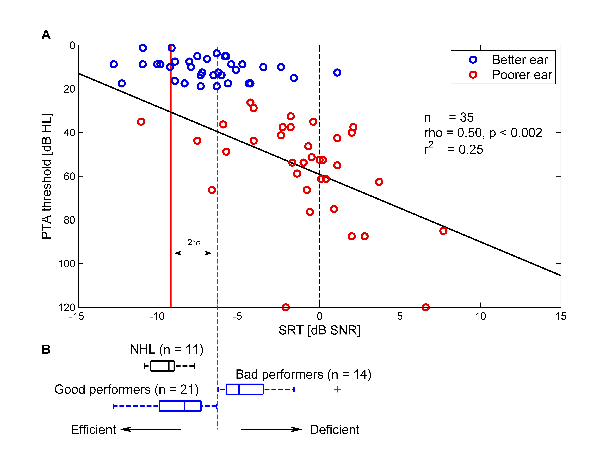
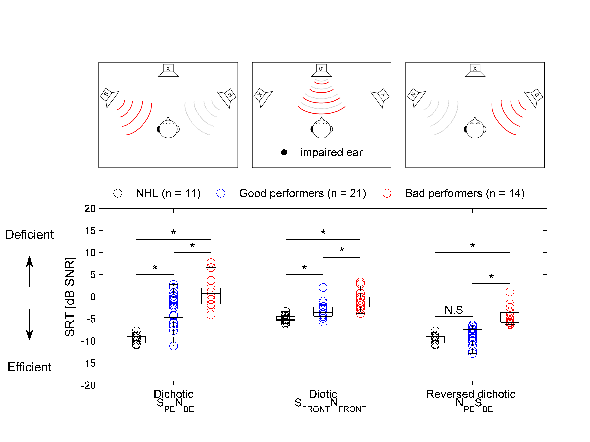

Matlab code from Vannson et al., 2017 (paper here)
This code has been simplified for displaying purposes.
The primary objective of this study was to correlate speech-in-noise abilities with pure-tone audiometry in individuals with unilateral hearing loss, with the goal of developing a predictive model.
% Binaural graph
% NV, Toulouse , July 2014
clear all
close all
clc
% Cmd
binaural = 1; % 1 = Plot binaural graph
matrix = 1; % 1 = Plot matrix graph
keep = 1; % 1 = Save figure
tostudy = 2; % group to compute
% Param
groups = {'Binauralite' ,...
'Binauralite-perdue' ,...
'Binauralite-rehabilite', ...
'Binauralite-rehabilite-NA',...
'perdue-NA',...
'TEMOINS'};
source = 'F:\NV_PhD\Data_sujets\Results';
boris = 'F:\NV_PhD\Data_Boris';
mfile = 'F:\NV_PhD\Tools\Matlab';
img = 'F:\NV_PhD\PhD_img';
police = 12;
font = 'bold';
graph_ext = '-dpng';
reso = '-r900';
col = [ 0.9 0 0 ; 0 0.7 0 ; 0 0 0.9 ;1 165/255 0;0.5 0.5 0.5; .8 .8 .8];
% NV Norms (new both : n = 27)
normes = [-5.3154 -13.45 -13.45];
std_normes = [0.6697 3.71 3.71];
cutoff = std_normes;
% -------------------------------------------------------------------------
% add mfile folder (matlab file)
addpath(genpath(mfile))
% Load data
cd(source)
folder = [ pwd filesep 'Groupe_' char(cellstr(groups(tostudy)))];
name = char(cellstr(groupes(tostudy)));
sprintf('Group data loaded is : %s', name)
cd(folder)
% Choose to load only audio and matrix data
data = load(['data_' char(cellstr(groupes(tostudy))) '.mat']);
audio = data.data.audiometrie; audiometry
matrix = data.data.matrix; Speech-in-noise data(Matrix)
% Sort ears
% check ears and rearrange them to put the better ear within the first column
NHL_OD = audio(:,1);
NHL_OG = audio(:,2);
oreilles = [NHL_OD NHL_OG];
for k = 1 : length(oreilles)
if oreilles(k,1) >= 25
oreilles(k,[1,2]) = oreilles(k,[2,1]);
end
if oreilles(k,1) > oreilles (k,2)
oreilles(k,[1,2]) = oreilles(k,[2,1]);
end
end
% Check for real uhl patients based upon oreilles (:,1)= < 20 dB
deafness = [num2cell(oreilles) num2cell(matrix) num2cell(audio)];
uhl = {[]};
bhl = uhl;
for i = 1: size(deafness,1)
if cell2mat(deafness(i,1)) <= 20
uhl{i,1} = deafness(i,:);
else
bhl{i,1} = deafness(i,:);
end
end
emptyCells = cellfun(@isempty,uhl);
uhl(emptyCells) = [];
emptyCells = cellfun(@isempty,BHL);
bhl(emptyCells) = [];
% Save uhl and bhl groups
save uhl uhl
save bhl bhl
% Binaural graph
% -------------------------------------------------------------------------
if binaural == 1
% Matrix limits
normes = normes(1,2);
cutoff = cutoff(1,2);
% Matrix data : % dio - dicho - inv conditions
x = [oreilles(:,1) matrix(:,3)];
y = [oreilles(:,2) matrix(:,2)];
figure
set(gcf,'name',[titlegraphe,' ',name,' ',date],'numbertitle','off')
set(gcf,'Toolbar','none','Menu','none');
hold on
box on
% gca
set(gca,'ydir','reverse')
axis([-15 15 0 120])
set(gca,'position',[0.13,0.32,.8,0.58]);
% line
line ([ normes normes],[ 0 120],'linestyle','-','color','r')
line ([ normes+cutoff normes+cutoff],[ 0 120]'linestyle','--','color','r')
line ([ normes-cutoff normes-cutoff ],[ 0 120],'linestyle','--','color','r')
line ([ 0 0 ],[ 0 120],'linestyle','--','color','k')
line ([min(xlim) max(xlim)],[20 20],'linestyle','--','color','k')
% plot pts
hbo = plot(uhl(:,5),uhl(:,1),'ob','markersize',6,'LineWidth',2,'markeredgecolor',col(3,:));
hmo = plot(uhl(:,4),uhl(:,2),'or','markersize',6,'LineWidth',2,'markeredgecolor',col(1,:));
% Multiple correlation analysis
[rmat,~,pmat] = spear(matrix(:,2),matrix(:,3));
[rbad,~,pbad] = spear(uhl(:,2),uhl(:,4))
[rgood,~,pgood] = spear(uhl(:,1),uhl(:,5))
% Fitting on only the bad ears
[cbad,gbad] = fit(uhl(:,4),uhl(:,2),'poly1','robust','Off');
pp = plot(cbad,'k');
set(pp,'linewidth',1.5);
legend off
% info
text(6.5,40,sprintf('rho = %2.2f, p < %2.3f',rbad,pbad),'fontsize',police)
text(6.5,47,sprintf('r^2 = %2.2f',rbad*rbad),'fontsize',police)
text(6.5,33,sprintf('n = %2.0f',size(uhl,1)),'fontsize',police)
% labels & legend
ylabel('PTA threshold [dB HL]','fontsize',police)
xlabel('SRT [dB SNR]','fontsize',police)
legend off
legend([hbo,hmo],{'Better ear';'Poorer ear'},'fontsize',police)
text('string','2*\sigma','HorizontalAlignment','center','position',[-7.8 90],'fontsize',police-4)
text('string','A','HorizontalAlignment','center','position',[-17 -5],'fontsize',police,'fontweight','bold')
annotation('doublearrow', [.29 .35], [.44 .44],...
'Head1Length',police-6,'Head1Width',police-6,...
'Head2Length',police-6,'Head2Width',police-6);
% boxplot beneath
hl = axes('position',[0.13,0.05,0.8,0.3]);
set(gca,'ydir','reverse')
axis([-15 15 0 120])
axis off
line ([ normes+cutoff normes+cutoff],[ 0 120],'linestyle','--','color','r')
% add boxplot on the bottom
htop = axes('position',[0.13,0.08,0.8,0.2]);
p = boxplot(htop,in(:,5),'color','b','position',-10,'width',3,'orientation','horizontal');
set(p,'linewidth',1.5)
hold on
p = boxplot(htop,out(:,5),'position',-5,'color','b','width',3,'orientation','horizontal');
set(p,'linewidth',1.5)
% add nhl to the boxplot graph
ndata = mean(nhl(:,2:3),2);
p = boxplot(htop,ndata,'position',2,'color','k','width',3,'orientation','horizontal');
set(p,'linewidth',1.5);
set(gca,'XTickLabel',{' '},'YTickLabel',{' '})
axis([-14.66 15 -14 14])
axis off
text('string','NHL (n = 11)','HorizontalAlignment','center','position',[-9.5 7],'fontsize',police)
text('string','Good performers (n = 21)','HorizontalAlignment','center','position',[-12 -5],'fontsize',police)
text('string','Bad performers (n = 14)','HorizontalAlignment','center','position',[-1 -.5],'fontsize',police)
text('string','B','HorizontalAlignment','center','position',[-17 7],'fontsize',police,'fontweight','bold')
% Create textboxs & arrows
annotation(gcf,'textbox',...
[0.15 0.05 0.01 0.020],...
'String',{'Efficient'},...
'HorizontalAlignment','center',...
'fontsize',police,...
'LineStyle','none');
annotation(gcf,'textbox',...
[0.55 0.05 0.01 0.020],...
'String',{'Deficient'},...
'HorizontalAlignment','center',...
'fontsize',police,...
'LineStyle','none');
annotation(gcf,'arrow',[0.4 0.5],...
[0.05 0.05],'HeadWidth',6,'LineWidth',0.6);
annotation(gcf,'arrow',[0.3 0.2],...
[0.05 0.05],'HeadWidth',6,'LineWidth',0.6);
% savefig
if keep == 1
cd(pwd)
print(graph_ext,reso,'PTAvsSRT')
end

% Matrix good vs bad performers
% -------------------------------------------------------------------------
Based upon the previous binaural graph, sort patients into good and bad performers
for further analysis and plot their Matrix results! The sorting will depend on the
better ear SRT (matrix) score.
Filter out uhl data to find uhl in and uhl out patients
out = uhl*0;
in = uhl; % to discard out data
for j = 1 : size(uhl)
if uhl(j,1) <= 20 & uhl(j,5)> (normes+cutoff)
out(j,:) = uhl(j,:);
end
end
idxo = out(:,1) == 0;
out(idxo,:) = [];
in(out(:,end),:) = [];
% Save in and out groups
save in in
save out out
if matrix == 1
% From Boris : load nhl data
addpath(genpath(boris))
nhl = load('Boris_NHL_matrix.txt');
nhl = nhl(:,1:3); % dio - dicho - inv
% gather dicho _inv
dicho = [nhl(:,2) nhl(:,3)];
dicho = mean(dicho,2);
% plot param
leg = {'Dichotic','Diotic','Reversed dichotic '};
xlabeltxt = 'Subjects';
ylabeltxt = 'SRT [dB SNR] ';
deaf_ear = 'impaired ear';
titlegraph = 'Matrix test';
mk = 8; % marker size
% figure
figure
set(gcf,'Toolbar','none','Menu','none');
set(gca,'LooseInset',get(gca,'TightInset'))
hold on
box on
% plot nhl data (dio - dicho - inv)
hnhl = plot(1,dicho,'ok','markersize',mk);
plot(5,nhl(:,1),'ok','markersize',mk)
plot(9,dicho,'ok','markersize',mk)
% boxplots
% plot all point first
hin = plot(2,in(:,4),'ob','markersize',mk);
plot(6,in(:,3),'ob','markersize',mk)
plot(10,in(:,5),'ob','markersize',mk)
hout = plot(3,out(:,4),'or','markersize',mk);
plot(7,out(:,3),'or','markersize',mk)
plot(11,out(:,5),'or','markersize',mk)
% dicho
boxplot(dicho,'position',1,'color','k','width',.5) % dicho
set(gca,'XTickLabel',{' '})
boxplot(in(:,4),'position',2,'color','k','width',.5)
set(gca,'XTickLabel',{' '})
h = boxplot(out(:,4),'position',3,'color','k','width',.5);
set(h(7,:),'Visible','off') ;
set(gca,'XTickLabel',{' '})
% dio
boxplot(nhl(:,1),'position',5,'color','k','width',.5) % dio
set(gca,'XTickLabel',{' '})
h = boxplot(in(:,3),'position',6,'color','k','width',.5);
set(h(7,:),'Visible','off') ;
set(gca,'XTickLabel',{' '})
h = boxplot(out(:,3),'position',7,'color','k','width',.5);
set(h(7,:),'Visible','off') ;
set(gca,'XTickLabel',{' '})
% Inv
nl = boxplot(dicho,'position',9,'color','k','width',.5); % inv
set(gca,'XTickLabel',{' '})
il = boxplot(in(:,5),'position',10,'color','k','width',.5);
set(gca,'XTickLabel',{' '})
ol = boxplot(out(:,5),'position',11,'color','k','width',.5);
set(ol(7,:),'Visible','off') ;
set(gca,'XTickLabel',{' '})
ylabel('SRT [dB SNR]','fontsize',police)
axis([0 12 -20 20])
% bootstrap stats
st_inv_out = bootci(10000,@mean, out(:,5));
st_inv_in = bootci(10000,@mean, in(:,5));
st_inv_nhl = bootci(10000,@mean, nhl(:,3));
st_dicho_out = bootci(10000,@mean, out(:,4));
st_dicho_in = bootci(10000,@mean, in(:,4));
st_dicho_nhl = bootci(10000,@mean, nhl(:,2));
st_dio_nhl = bootci(10000,@mean, nhl(:,1));
st_dio_out = bootci(10000,@mean, out(:,3));
st_dio_in = bootci(10000,@mean, in(:,3));
% Display stats results
% text
% dicho
text('string','*','HorizontalAlignment','center','position',[1.5 6],'fontsize',police+2)
text('string','*','HorizontalAlignment','center','position',[2.5 11],'fontsize',police+2)
text('string','*','HorizontalAlignment','center','position',[2 14],'fontsize',police+2)
% dio
text('string','*','HorizontalAlignment','center','position',[5.5 6],'fontsize',police+2)
text('string','*','HorizontalAlignment','center','position',[6.5 10],'fontsize',police+2)
text('string','*','HorizontalAlignment','center','position',[6 14],'fontsize',police+2)
% inv
text('string','N.S','HorizontalAlignment','center','position',[9.5 -3],'fontsize',police-1) % inv
text('string','*','HorizontalAlignment','center','position',[10.5 4],'fontsize',police+2) % inv
text('string','*','HorizontalAlignment','center','position',[10 11],'fontsize',police+2) % inv
% line
line([1 2],[5 5],'linestyle','-','color','k','linewidth',1.1)
line([2 3],[10 10],'linestyle','-','color','k','linewidth',1.1)
line([1 3 ],[13 13],'linestyle','-','color','k','linewidth',1.1)
line([5 6],[5 5],'linestyle','-','color','k','linewidth',1.1)
line([6 7],[9 9],'linestyle','-','color','k','linewidth',1.1)
line([5 7 ],[13 13],'linestyle','-','color','k','linewidth',1.1)
line([9 10],[-4.5 -4.5],'linestyle','-','color','k','linewidth',1.1)
line([10 11],[3 3],'linestyle','-','color','k','linewidth',1.1)
line([9 11],[10 10],'linestyle','-','color','k','linewidth',1.1)
set(gca,'position', [0.1675,0.1285,0.76,0.40])
% legend
legend([hnhl(3,1);hin(4,1);hout(5,1)],...
{'NHL (n = 11)','Good performers (n = 21)','Bad performers (n = 14)'},'fontsize',police-1)
legend boxoff
set(legend,'position',[0.43 0.41 0.2 0.3],'orientation','horizontal')
% add details to the figure
set(gca,'Xtick',[2,6,10])
text('string','S_P_EN_B_E','HorizontalAlignment','center','position',[2 -24.5],'fontsize',police-1)% dicho
text('string','S_F_R_O_N_TN_F_R_O_N_T','HorizontalAlignment','center','position',[6 -24.5],'fontsize',police-1)%dio
text('string','N_P_ES_B_E','HorizontalAlignment','center','position',[10 -24.5],'fontsize',police-1) % inv
% add conditions
text('string',leg(1)','HorizontalAlignment','center','position',[2 -22],'fontsize',police-1)% dicho
text('string',leg(2),'HorizontalAlignment','center','position',[6 -22],'fontsize',police-1)%dio
text('string',leg(3),'HorizontalAlignment','center','position',[10 -22],'fontsize',police-1) % inv
% imgs
addpath(genpath(img))
folder = dir(fullfile(img,'ENG_*.png'));
dicho = imread(folder(1).name,'BackgroundColor',[1 1 1]);
dio = imread(folder(2).name,'BackgroundColor',[1 1 1]);
inv = imread(folder(3).name,'BackgroundColor',[1 1 1]);
hold on
haxinv = axes('Position', [.165, .62, .24, .24]);
imshow(dicho)
haxdicho = axes('Position', [.425, .62, .24, .24]);
imshow(dio)
% legend for schemes
hold on
scatter(100,280,'ok','filled')
ht = text(150,280,deaf_ear,'fontweight','normal','fontsize', police-1,'color','k');
haxdio = axes('Position', [.685, .62, .24, .24]);
imshow(inv)
% add textbox & arrows
% Create textbox
annotation(gcf,'textbox',...
[0.045 0.17 0.01 0.020],...
'String',{'Efficient'},...
'HorizontalAlignment','center',...
'fontsize',police,...
'LineStyle','none');
% Create textbox
annotation(gcf,'textbox',...
[0.045 0.47 0.01 0.020],...
'String',{'Deficient'},...
'HorizontalAlignment','center',...
'fontsize',police,...
'LineStyle','none');
% Create arrow
annotation(gcf,'arrow',[0.05 0.05],...
[0.30 0.230],'HeadWidth',8,'LineWidth',0.8);
% Create arrow
annotation(gcf,'arrow',[0.05 0.05],...
[0.35 0.42],'HeadWidth',8,'LineWidth',0.8);
%savefig
if keep == 1
cd(art_folder)
print(graph_ext,reso,['Matrix_NHL_' date])
end

The code continues to deepen our understanding of how good and bad performers differ.